|
An Eyewitness Account (Week One) By : Jeff Head July 16, 2001 I was an eyewitness to events in Klamath Falls at the irrigation head gates to canal A for the Klamath Project on Friday evening, July 13th through Sunday afternoon, July 15th. I wanted to write down my account for my own family and posterity and for any who have an interest to read about real Americans, full of the spirit that made this nation great, as they stand up against our own modern form of the "kings" tyranny.
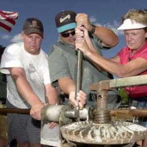
Friday, July 13th, 2001 I was determined to stand with them against the unbelievably reprehensible actions of the Federal Government in completely shutting off the irrigation water to over fourteen hundred farm families. A whole valley full of farmers. The stated reasons are frivolous and an assault on the senses and reasoning of any individual with a love of liberty in their soul and a drop of loyalty to our Constitutional Republic running in their blood. Such an action by our own government cannot be allowed to stand, any more than the founders of this nation allowed the actions of the increasing tyranny of their day to stand. I arrived at the head gate at around 11:30 PM, maybe a little later. James met me at a nearby Safeway and guided me to the head gates and I met his father. I found about fifteen local people, mostly farmers, sitting around in front of the gate, talking and passing the time. They all introduced themselves to me and greeted me warmly, several of them recognizing my name in association with an online petition I created on their behalf. Two or three of their number were women who were standing there with the farmers in complete support. I asked them where all of the other local support was. They informed me that quite a few had gone home earlier after they opened the gate and that these were staying the night to protect the gates and keep the water on. I didn't think it was enough. I asked them why they weren;t camping out on the head gate itself and they informed me that the Sheriff had requested that they stay there outside the front gate. They also informed me that they had stood down two federal marshals only an hour or two earlier. The way they did it is a story that needs to be told in and of itself. It was related to me by one of those there that night, Joey, and several of his compatriots. When the gates were opened in defiance of the court order for the third time on July 4th, the US Government had dispatched two US Marshals there to investigate and keep it from happening again. When news reached them that the gates were opened again on July 13th and that a group of farmers were holding the gates, they proceeded to the head gates with several other officers who had arrived. Upon arrival, the two immediately got out of their car and began to approach the group of fifteen or so farmers in a very serious manner, intending business, while their "backup" was parked on the road, on a little hill above. As they approached, the farmers and their supporters gathered together in front of the entrance and ... began singing hymns to the US Marshals! The marshals were completely taken back. They stopped cold as if though running into a barrier and backed up to their car. Several of those faithful farmers believe that God in Heaven took a hand in their behalf that day. Well, our own nation's founding is full of such events where many believed and witnessed Heavenly help that allowed them to overcome vastly superior forces. Patrick Henry himself, in his famous "Give me Liberty or Give me Death" speech indicated that, "Beside, Sir, we shall not fight our battles alone. There is a just God who presides over the destinies of Nations, and who will raise up friends to fight our battles for us." Who is to say it is not so? When the Marshals reached their car, they spoke between themselves. After a moment of discussion, they backed off and talked to the Sheriff who had arrived and was apparently observing. They then departed the scene. Joey and his compatriots were convinced that the US Marshals would not be back and that massive numbers of support were coming the next day. I was sure that the Marshals would be back, and in numbers. I voiced my concerns and asked if someone would take me on a recon of the area. Myself and Joey did. I found that another gate in the fence surrounding the head gates was located in the back where no one was camping or sitting. Beyond that gate was an access gate on the road up by a subdivision controlling access to the head gates on that side. I suggested to those there that perhaps some vehicles should park for the night over there and some of our numbers should stay the night there. I also suggested that the cars on the fron side be bunched up in front of the gate to control the easy access that currently existed. I suggested that the US Marshals were very smart and no doubt had a layout of the entire area. They had to know that there were two gates and we would need more people in order to prevent them from getting in. These were my suggestions. When those there voiced a fairly united thought that everything was okay, I asked if I could park my Tahoe there in front of that other gate for the night. they agreed and we did so. I did this of course because I intended to sleep in it and it was much darker over there by that gate, which would allow me to sleep more soundly ... in case anyone is wondering. We then talked through the night and reviewed the entire situation, the appalling nature of it, how none of expected to ever live to see the day of such tyranny on our own shores at the hands of any government, let alone our own. Some singing took place, quite a bit of praying took place. One prayer asked God to consecrate that place as a place for liberty. I believe He did.
Saturday, July 14th, 2001 At approximately 6:10 AM, maybe a little later, we saw many Law Enforcement vehicles approaching on the main road. They all began turning in at the head gate, towards the front gate where we were sitting. Shouts of "OK boys, it's time," and, "Time to stand up," rang through our midst as we gathered around the main gate in the fence ... all fifteen or so of us. Twelve to fifteen vehicles and two motorcycles disgorged twenty-five to thirty officers ... all of them local. Local Police and Sheriff's deputies ... there may have also been a couple of State Police. When we saw this, them getting out and the local Police Chief urging calm ... it was then that we looked over our shoulders and saw that about a dozen US Marshals had entered in the back gate while our attention had been diverted to the front gate. It was a very crisply executed flanking maneuver. The US Marshals had been slowed down a bit because they had to park their vehicles at the 2nd gate and walk in around my Tahoe, but by the time we saw them, they were already making their way across the head gates and had taken possession of them.
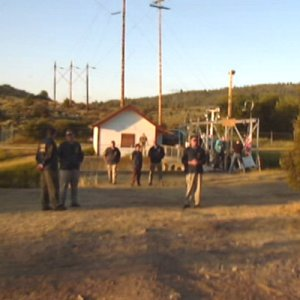 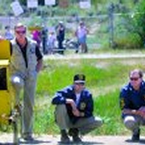 The Agent in Charge, an older gentlemen, walked up to the gate we had been defending and stated the obvious. That they were taking possession of the area and securing the facility for the Federal Government. His agents positioned themselves between ourselves and the head gates, clearly all armed under their US Marshal jackets. They had their arms folded, their feet apart ... and a look of determination and ... smugness, almost arrogance on their faces. There was nothing left to defend, the head gates were back in the government's control and they would soon be closed. The Agent in Charge asked us if we had the key to close the gates. "Key?" one of the farmers said. "Yes, the wrench or pry bar you used to open the gates," he said. Everyone indicated they didn't know where in the heck it could possibly be and that maybe it had fallen in the lake. The agent in charge said he was just doing his job and that drew him some calls regarding the Nuremberg trials after World War II and that others had once been tried for, "just doing there job". The agent in charge turned to go and then he, or one of the local police asked who owned the black Tahoe with the Idaho plates. I indicated it was mine and he said I had to move it immediately or it would be towed. One of the ladies who had stood with us offered to drive me over to get my Tahoe. As I was getting to the car, one of the US Marshals read me the riot act. He indicated that it was Federal Offense to block a Federal facility. He said I could go to jail and that if I did it again I would go to jail and that they would impound my car and that I would never get it back. I asked him if he knew what he was doing here. He said he did. I said that I didn't mean his spiffy little operation against a handful of farmers that morning, I meant the fact that his actions were helping destroy over 1400 innocent American families, their livelihood and their way of life. He said he understood and I replied that he most certainly did not. Not until his job and livelihood were taken away frivolously by his own government and that same government sent armed men to insure it, could he possibly understand. At that he turned and left and I got in my vehicle and drove it back to the front gate. When getting there, I remember talking to one of the local police officers who were now maintaining a presence. I believe it was the local police chief. I asked him what their intent had been that morning. He indicated that the local officers (police and Sheriff's deputies) were there to insure that we moved away from the gate and did not attempt to interfere with the Federal officer's occupation of the head-gate. He said they would move us physically if necessary and arrest anyone that resisted under Federal charges of blocking access to a federal facility. I said, "so this means you would have arrested local people?" ... he said, "yes, if they had resisted moving out of the way." 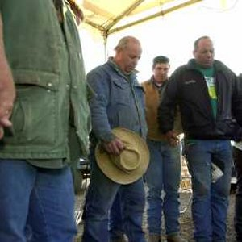 The mood was now somber at the front gate. They had worked hard to open that gate manually and they had felt vindicated when they stood down the two US Marshals the day before. Now they had lost it again. Their reaction ... they clasped hands and prayed. I believe, as events will indicate that those prayers were later answered. 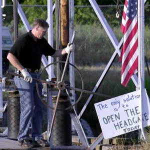 As this occurred, a BOR representative entered the gate area and began to close the head gate that had been opened. A larger and large crowd gathered at the main entrance. Some also began gathering at the back gate. There was lots of speculative talk. The US Marshals left about eight men there to guard the gates through the day. We wondered how many of us it would take for them to back down at overwhelming numbers and not try to arrest us by force if we crossed the line. It was thought that it would take two or three hundred to cross ... I wondered if we'd find that many willing. As the day progressed, we did get a lot of folks at the front gate. Many from the local area, an increasing number arriving from outside the area to show their support. JJ Johnson, the editor of the SierraTimes online news source arrived. Several other online conservative organizations were also represented, including FreeRepublic.com and Frontiers for Freedom. The mood was somber, with a strong undertone of frustration and anger. This can easily be understood when one contemplates the fact that these families are being destroyed. Many things occurred throughout the day. All of the US Flags around the facility were turned upside down to indicate the extreme distress. One lady by the name of Barbara was very passionately pleading with the US Marshals to consider their actions, what impact they were having on innocent men woman and children who simply wanted to farm. She would stand their with children asking them if they had any children and how they would feel to have no water for their plants, yards or livelihood. As I say, she was very effective (and also became one of the principle organizers of activities for the demonstrators). On several occasions, the US Marshals turned around and wouldn't look at her. I believe she was getting to them. On another occasion, a local firm had apparently been called to bring in porta-potties for the Marshals. As the truck arrived and local people saw what firm it was ... several of them called the owner of that business. I was standing near one prominent individual who indicated to the owner that he would lose all of his business from then on, and that of everyone he could talk to if he delivered those porta-potties. The truck, which had already entered the "compound", turned around and drove away without delivering its goods. Later, a large local man approached the gate. He knew the Agent in Charge. He stopped at the gate and yelled at the US Marshals, "You tell Agent so-and-so (can't remember the name) that I am out here and want to whoop his a$$. He'll know who I am". Sure enough, the agent in charge came out and these two men had a conversation at the fence. It was obvious they knew each other. The local man asked the agent what in the hell he was doing there. The agent said it was the last place he wanted to be. The local man was disgusted and said he was helping them ruin so many families. The agent said something about his job and the local man just gave him a look of disgust. I can't remember all that was said ... but I counted well how such events are creating dividing lines ... as well they should ... even between old friends and acquaintances who find themselves on opposite sides of the fence. A rally was held at 2:30 PM and some good speeches and good singing were had. A local gospel group sang, the pledge of allegiance was said and the national anthem sung. The Federal Officers did not stand at attention, salute or even stand still while this was going on. Many in attendance were surprised as they expected them to show at least some respect. JJ Johnson gave a tremendous address on rights and how critically important it has been, throughout our history to stand up and fight for our rights. He made it plain that it is equally important today. I spoke regarding the travesty of this situation and appealed directly to the US Marshals to consider their oath to the Constitution and recognize that their job had become to destroy innocent, patriotic, hard working Americans. I urged them to turn away and to consider soberly their choice. That a government could push good people too far ... that it had happened before. As the afternoon wore on, at the height we had maybe three hundred people there. Frustration amongst the farmers grew. More and more local people from Klamath Falls joined the farmers present in recognizing that the water simply needed to be turned on. Many vowed to maintain the vigil, the "siege" of this new federal "compound" until it was. Late in the day I spoke to one a county commissioner who arrived. I asked him why the county had not acted more strongly. He indicated he supported "1st amendment rights to free speech" like this gathering but couldn't support anything illegal. I asked him what about the illegality being conducted by the federal government against the people of his county. He said that's what the courts are for. I indicated that such a course would only insure that these people were pushed off the land, that such a course took too long. His answer was simply he couldn't support anything unlawful. I walked away indicating that it was a citizens duty to resist illegal acts and not abide them, particularly if perpetrated by government upon its citizens. After going out and drinking some orange juice with some of the folks in attendance, I somewhat discouragingly turned in at about 8:30 PM, after having gone the last 40 hours without any sleep. I planned to leave the next morning fairly early if we didn't come up with some action to take, something to answer the federal tyranny occurring around us. Talk and more talk had only led these good people to the brink of destruction. Their officials weren't listening, and apparently had no inclination to do so.
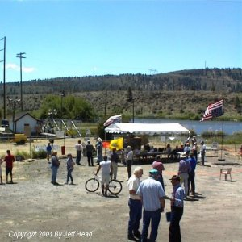
Sunday, July 15th, 2001 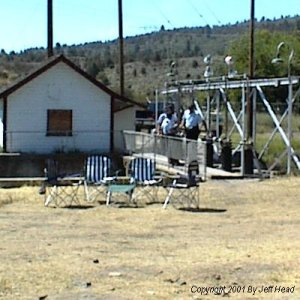 During the night, the guard had changed. We were now looking at Park Police who had been brought in from San Francisco. They had their uniforms on, weapons and billy clubs prominently displayed. Very early on a group of the farmers and local people met to discuss plans. Several good go forward plans were discussed and agreed upon. In my mind, none of them really addressed the immediate situation, or did so forcefully and convincingly. Something needed to happen today. The initiative had to be reacquired some how ... but how? Armed men guarded the water. Then, fitting for a Sunday ... inspiration. Almost simultaneously, from two separate sources, an idea blossomed ... what did the Feds expect? A head-on charge at the gate or ... nothing. Why give them what they wanted? Why give them either of those? Why not find a way to relegate their plan to guard the head gates to irrelevance? Why not just by-pass the head gates? Use what this thing is all about ... irrigation equipment ... pumps and pipes. This idea took hold like wild fire. "Yes, we can do that!", "Well we sure enough know how to do that!", "Let's make it happen!", "DO IT!" Several farmers I had come to know and respect over the last two days fanned out across the community and the basin. Too many to name and I know they wouldn't want their names to be printed anyway. Not out of fear mind you, these men are courageous ... they are simply reserved and I must respect that . The idea continued to grow, everyone who heard of it embraced it. "That'll show 'em", "Let 'em guard a gate we don't even use". In confidence the plan was shared with a few monitoring the Internet forums and discussion boards so they would be ready to announce it the moment it occurred. A rally was planned for 2:30 PM to give it time to get done and be turned on during the rally, and to mask the laying of the pipe with the numbers of people. The media that were still in town were told to be sure and be there, but were not told why. The location for placing the pump was determined. A suitable place to discharge the water was found, through a natural drainage near the front gate ... right in view of the press and the federal officers. Myself and another stepped off the distance to determine the amount of pipe required ... 180 yards, that would be 540 feet ... better make it 700 just to be sure. While we waited I had an opportunity to talk to one of the Park Service Police who had walked over next to the fence. MYSELF: "Excuse me officer, do you mind if I ask you something?"An undercurrent of excitement grew in the crowd. Many knew what was coming, others guessed something was up ... I'm sure the federal officers wondered what those pesky farmers could possibly be up to. Several of us would walk up to the chains locking the gate every few minutes and take their measure. Rattle them a bit ... take a hard look at the hinges ... just to keep the federal officers wondering .... just to keep them diverted from our intentions. More speeches were given. More appeals to the federal officials, more direct appeals to the new officers guarding the facility. The rally began as we waited for the irrigation equipment. 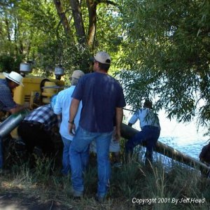 Then the pump arrived and a number of the farmers started setting it up to feed from the lake near a bridge across the lake maybe a hundred yards above the demonstrations site.. 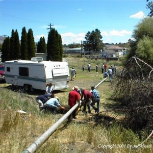 Pipe was offloaded from a trailer that one of the farmers had towed to the site behind his pickup and we began to lay it out towards the canal. Then ... a crisis. As two of the farmers were preparing to prime the pump, and as I looked on ... a state trooper saw what we were doing and raced up to the bridge above the gates (which was screened from the gates by trees) to see exactly what was going on. When he saw the pump and the pipe, he began to speak. OSP: "You really don't want to do this"The officer went to his car and began driving towards the two City Police Cars over near the demonstrations. I told the guys to keep on keepin on and ran to the demonstration. Barbara helped me gather about fifty people and we started back to the bridge, about 100 yards away. Along the way I told the folks ... old gentlemen, grandmothers, local men, women, teenagers, children ..."We're going up here to form a human shield around these local farmers so they can get this pump going ... you may be arrested ... if you're not in for that, you'd best leave." Not one turned back. 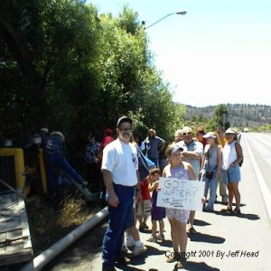 We got to the bridge and formed up, holding arms ... here came the local police. He passed us and turned around. He pulled up to the end of our line and talked for a moment to a grandma there he appeared to know. He pulled up next to us and indicated he needed to talk to those farmers ... a teenager in front of me said, "You'll have to arrest us all to do that." The local police officer looked down, shook his head and indicated that we should just make sure we stayed out of the road ... and he drove away. I was SO proud of those folks. They knew what was right and they were willing to stand for it. I was also SO proud of those two boys on the pump. They stood resolutely. They had made their decision and would not be deterred. Threats of arrest or violence had no bearing. That rolled off of them like water off a ducks back. I was humbled beyond words. God Bless Them ALL!. 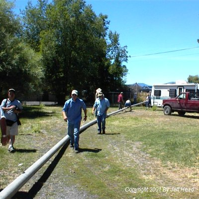 The last pipe was laid and hooked up. Now it was time. The Feds were watching and had figured out what was coming. The last segment was attached. The pump was turned on ... a few minutes later, out of an 8" pipe ... THE WATER FLOWED! 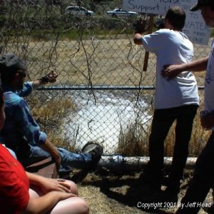 Cheers went up. A great chant was started "Let the Water FLOW, LET THE WATER FLOW!" It was heard live over the Internet. Pictures were taken. The headline we desired? ....
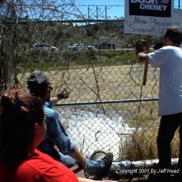 Looking over the top of the discharge pipe as that water poured out, you could see the Federal Officers who had moved over directly across from the discharge. They had their arms folded, their feet apart ... and a look of incredulity on their faces! As if though to say, "Uh, what are we supposed to do now?". 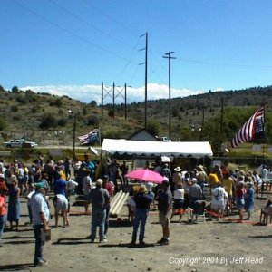 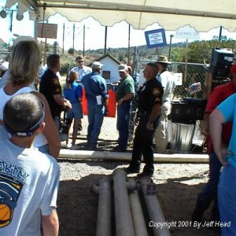 A few moments later a local police officer announced that the local agent in charge was willing to make a concession. To avoid erosion, he would allow two of our number to enter the "compound" and lay pipe from our discharge to the canal so the water poured directly into the canal. 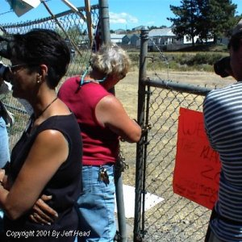 As a local individual remove gum from the key hole in the lock on the gate so the Federal Officers could open it, another cheer went up as two farmers entered the area and assembled the pipe. 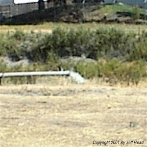 When that water was turned on and began pouring directly into the canal, another great cheer went up, and once again the chant, "LET THE WATER FLOW, LET THE WATER FLOW!" The local police officer indicated to me personally that the Federal people indicated they would not contest this development. It was not on the property they were instructed to protect. He also indicated that the Federal agents just had one question ..... "Why didn't they use a larger pipe?" That can be fixed. I can't begin to thank all of the people there, or list them all. The locals, the folks from FreeRepublic (Aunt B, that includes you and your hubby, JJ Johnson from SierraTimes, and the folks from Frontiers of Freedom. Most importantly those farmers, the relatively small number of them who are impacted who have seen that they MUST ACT in order to address this. While it is certainly preferable, it does not take a majority to stand for fundamental moral principle and liberty, it takes committment, courage and unwaivering dedication and willingness to sacrifice. Those few know they have been led along, they are trying to be bought off, they have been lied to ... but they have also been underestimated ... and they just want their water back so they can farm. Later that day, glowing from the events ... filled with emotion at the ingenuity and the determination growing in these fine farmers, I prepared to leave. Several of these good gracious people came up to me and thanked me for coming. They offered their homes and their sustenance. They said if I was ever in need to call. They said be careful. It is I who should thank them ... and I do. So, I drove back to my home, in a valley that is green where water is still flowing ... I drove with a commitment to return there if conditions worsen again ... and especially when those gates are again opened so the water that those folks own, and that they depend on for life ... is returned in full measure to them.
July 17, 20001, Post Script
Jeff Head
SIGN THE NATIONAL PETITION FOR THE KLAMATH BASIN CRISIS
CLICK BELOW FOR BOOKS/NOVELS OF INTEREST: 


[Please consider visiting these sites as well] The Attack on America Memorial Site - The Winning Iraqi Freedom Dedicatory Site
Copyright © 2001-2006 by Jeff Head, All Rights Reserved
|